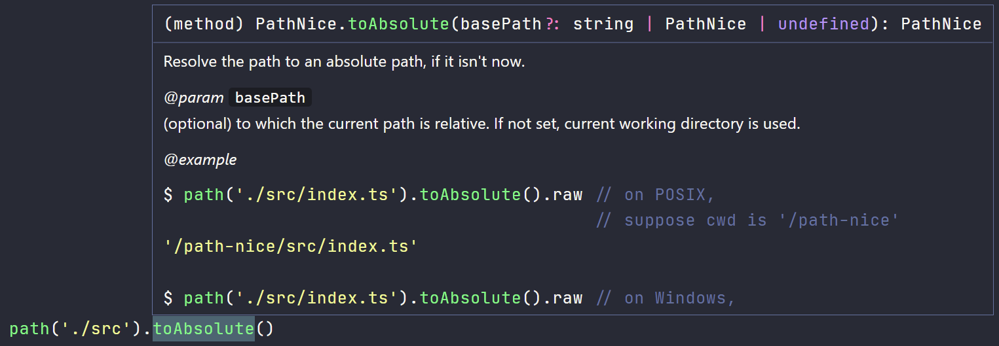
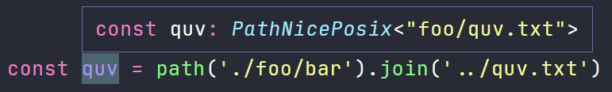

path-nice
English | 简体中文
path-nice - path 与 fs 应有的设计.
如果有时你对 Node.js 的原装 path 与 fs 觉得不 nice, 那么只需

现有代码依然正常工作, 但 path 却已进化.
Why this lib?
一个库搞定 path 与 fs, 还能大大缩短代码
原始版 👇
const src = path.resolve('./src');
const filename = path.join(src, 'index.ts');
await fs.promises.writeFile(
filename,
'export default 42;',
);
nice 版 👇
const src = path('./src').toAbsolute();
const filename = src.join('index.ts');
await filename.writeFile('export default 42;')
注释翔实, 文档不用翻, 例子全都有

支持指定其他 fs, 例如内存文件系统 memfs
import path from 'path-nice';
import { fs } from 'memfs';
const mpath = path
.posix // 强制使用 POSIX 风格的路径
.bindFS(memfs); // 绑定文件系统
await mpath('/index.ts')
.writeFile('export default 42;');
元编程加持, 路径是啥, 编译时就知道
(仅 POSIX 版本具有该能力)

安装
npm install path-nice
或者
yarn add path-nice
- 要求: Node.js >= v12.0.0
- 提供: CommonJS, ESModule 和 TypeScript typings
- ESModule 版本可以直接在 Node 中使用.
用法
⚠️ 这个库的 API 将在 2.0 版达到稳定, 在此之前请勿在生产中使用.
在 path 后添加一对 () 以进入 "nice" 模式.
import path from 'path-nice'
const pkg = path('./package.json')
pkg instanceof path.PathNice // true
Object.isFrozen(pkg) // true
Path 相关方法
const a = path('path-nice/src')
a.raw // 'path-nice/src'
a.join('index.ts') // path('path-nice/src/index.ts')
a.parent // 👇 Same to .dirname()
a.dirname() // path('path-nice')
a.dirname('/work') // path('/work/src')
a.filename() // 'src'
a.filename('docs') // path('path-nice/docs')
const b = path('index.ts')
b.ext() // '.ts'
b.ext('.js') // path('index.js')
b.ext(null) // path('index')
const c = a.join(b)
c.prefixFilename('old.') // path('path-nice/src/old.index.ts')
c.postfixBeforeExt('.old') // path('path-nice/src/index.old.ts')
c.postfix('.old') // path('path-nice/src/index.ts.old')
c.isAbsolute() // false
c.toAbsolute() // path('/work/path-nice/src/index.ts'), suppose cwd is '/work'
c.toRelative('path-nice/docs') // path('../src/index.ts')
await c.realpath() // path('/work/path-nice/src/index.ts'), suppose cwd is '/work',
// and there are no symbolic links here.
const d = c.toAbsolute().parse()
d.root() // '/'
d.dir() // '/work/path-nice/src'
d.base() // 'index.ts'
d.name() // 'index'
d.ext() // '.ts'
d.dir('/home/fuu').ext('.json').format()
// path('/home/fuu/index.json')
文件系统相关方法
Promise ver
Read and write
.readFile
.readString
.readBuffer
.writeFile
.writeJson
.updateString
.updateJson
.appendFile
.createReadStream
.createWriteStream
.open
Copy, move and remove
.copyTo
.moveTo
.rename
.remove
.emptyDir
Ensure
.ensureDir
.ensureFile
Is ... ?
.exists
.isDir, isEmptyDir
.isFile
.isSymbolicLink
List directory contents
.readdir
.ls(recursive?: boolean, followlinks?: boolean): Promise<{
dirs: PathNice[];
files: PathNice[];
}>
Watch
.watch
.watchFile
Others
.stat
.lstat
.chmod
.chown
真实用例
react-scripts/config/paths.js
path-nice 的构建脚本
这是这个库的构建脚本 (scripts/build.js), 它看上去不是很 nice (但毕竟我们不能令它自己构建自己):
const path = require('path');
const fs = require('fs');
const concurrently = require('concurrently');
const dirDist = path.resolve('./dist');
build();
async function build() {
// clean
fs.rmSync(dirDist, { recursive: true, force: true });
// tsc concurrently
// ...
// cjs/esm fixup
fs.writeFileSync(
path.join(dirDist, 'cjs/package.json'),
JSON.stringify({ type: 'commonjs' }, null, 4),
{ encoding: 'utf-8' },
);
fs.writeFileSync(
path.join(dirDist, 'esm/package.json'),
JSON.stringify({ type: 'module' }, null, 4),
{ encoding: 'utf-8' },
);
}
如果用上 path-nice :
const path = require('path-nice');
const concurrently = require('concurrently');
const dirDist = path('./dist');
build();
async function build() {
// clean
await dirDist.remove();
// tsc concurrently
// ...
// cjs/esm fixup
await dirDist.join('cjs/package.json').writeJson({ type: 'commonjs' });
await dirDist.join('esm/package.json').writeJson({ type: 'module' });
}